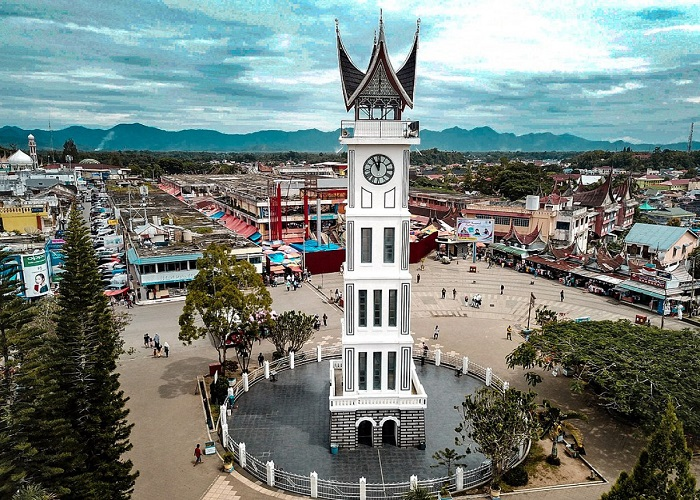
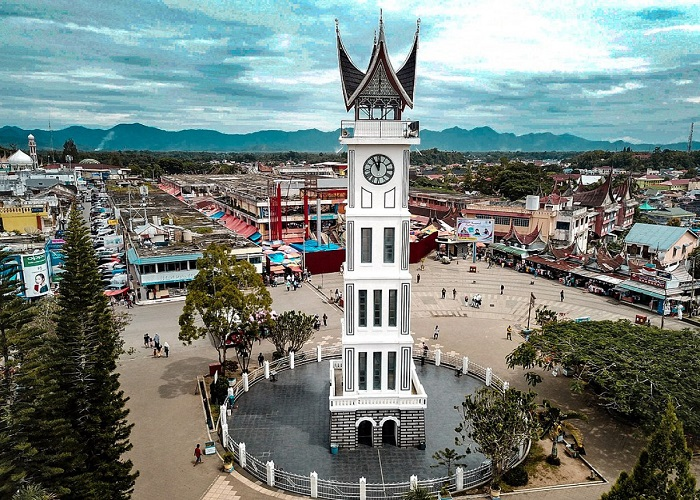

Sejarah Sumatera Barat

Nama Provinsi Sumatra Barat bermula pada zaman Vereenigde Oostindische Compagnie (VOC), di mana sebutan wilayah untuk kawasan pesisir barat Sumatra adalah Hoofdcomptoir van Sumatra's westkust. Kemudian dengan semakin menguatnya pengaruh politik dan ekonomi VOC, sampai abad ke 18 wilayah administratif ini telah mencangkup kawasan pantai barat Sumatra mulai dari Barus sampai Inderapura.
Seiring dengan kejatuhan Kerajaan Pagaruyung, dan keterlibatan Belanda dalam Perang Padri, pemerintah Hindia Belanda mulai menjadikan kawasan pedalaman Minangkabau sebagai bagian dari Pax Nederlandica, kawasan yang berada dalam pengawasan Belanda, dan wilayah Minangkabau ini dibagi atas Residentie Padangsche Benedenlanden dan Residentie Padangsche Bovenlanden.
Selanjutnya dalam perkembangan administrasi pemerintahan kolonial Hindia Belanda, daerah ini tergabung dalam Gouvernement Sumatra's Westkust, termasuk di dalamnya wilayah Residentie Bengkulu yang baru diserahkan Inggris kepada Belanda. Kemudian diperluas lagi dengan memasukkan Tapanuli dan Singkil. Namun pada tahun 1905, wilayah Tapanuli ditingkatkan statusnya menjadi Residentie Tapanuli, sedangkan wilayah Singkil diberikan kepada Residentie Atjeh. Kemudian pada tahun 1914, Gouvernement Sumatra's Westkust, diturunkan statusnya menjadi Residentie Sumatra's Westkust, dan menambahkan wilayah Kepulauan Mentawai di Samudera Hindia ke dalam Residentie Sumatra's Westkust, serta pada tahun 1935 wilayah Kerinci juga digabungkan ke dalam Residentie Sumatra's Westkust. Pasca pemecahan Gouvernement Sumatra's Oostkust, wilayah Rokan Hulu dan Kuantan Singingi diberikan kepada Residentie Riouw, dan juga dibentuk Residentie Djambi pada periode yang hampir bersamaan.
Selanjutnya dalam perkembangan administrasi pemerintahan kolonial Hindia Belanda, daerah ini tergabung dalam Gouvernement Sumatra's Westkust, termasuk di dalamnya wilayah Residentie Bengkulu yang baru diserahkan Inggris kepada Belanda. Kemudian diperluas lagi dengan memasukkan Tapanuli dan Singkil. Namun pada tahun 1905, wilayah Tapanuli ditingkatkan statusnya menjadi Residentie Tapanuli, sedangkan wilayah Singkil diberikan kepada Residentie Atjeh. Kemudian pada tahun 1914, Gouvernement Sumatra's Westkust, diturunkan statusnya menjadi Residentie Sumatra's Westkust, dan menambahkan wilayah Kepulauan Mentawai di Samudera Hindia ke dalam Residentie Sumatra's Westkust, serta pada tahun 1935 wilayah Kerinci juga digabungkan ke dalam Residentie Sumatra's Westkust. Pasca pemecahan Gouvernement Sumatra's Oostkust, wilayah Rokan Hulu dan Kuantan Singingi diberikan kepada Residentie Riouw, dan juga dibentuk Residentie Djambi pada periode yang hampir bersamaan.
Pada awal kemerdekaan Indonesia pada tahun 1945, wilayah Sumatra Barat tergabung dalam provinsi Sumatra yang berpusat di Bukittinggi. Empat tahun kemudian, Provinsi Sumatra dipecah menjadi tiga provinsi, yakni Sumatra Utara, Sumatra Tengah, dan Sumatra Selatan. Sumatra Barat beserta Riau dan Jambi merupakan bagian dari keresidenan di dalam Provinsi Sumatra Tengah. Pada masa PRRI, berdasarkan Undang-undang darurat nomor 19 tahun 1957, Provinsi Sumatra Tengah dipecah lagi menjadi tiga provinsi yakni Provinsi Sumatra Barat, Provinsi Riau, dan Provinsi Jambi. Wilayah Kerinci yang sebelumnya tergabung dalam Kabupaten Pesisir Selatan Kerinci, digabungkan ke dalam Provinsi Jambi sebagai kabupaten tersendiri. Begitu pula wilayah Kampar, Rokan Hulu, dan Kuantan Singingi ditetapkan masuk ke dalam wilayah Provinsi Riau.
Pada awal kemerdekaan Indonesia pada tahun 1945, wilayah Sumatra Barat tergabung dalam provinsi Sumatra yang berpusat di Bukittinggi. Empat tahun kemudian, Provinsi Sumatra dipecah menjadi tiga provinsi, yakni Sumatra Utara, Sumatra Tengah, dan Sumatra Selatan. Sumatra Barat beserta Riau dan Jambi merupakan bagian dari keresidenan di dalam Provinsi Sumatra Tengah. Pada masa PRRI, berdasarkan Undang-undang darurat nomor 19 tahun 1957, Provinsi Sumatra Tengah dipecah lagi menjadi tiga provinsi yakni Provinsi Sumatra Barat, Provinsi Riau, dan Provinsi Jambi. Wilayah Kerinci yang sebelumnya tergabung dalam Kabupaten Pesisir Selatan Kerinci, digabungkan ke dalam Provinsi Jambi sebagai kabupaten tersendiri. Begitu pula wilayah Kampar, Rokan Hulu, dan Kuantan Singingi ditetapkan masuk ke dalam wilayah Provinsi Riau.
 
